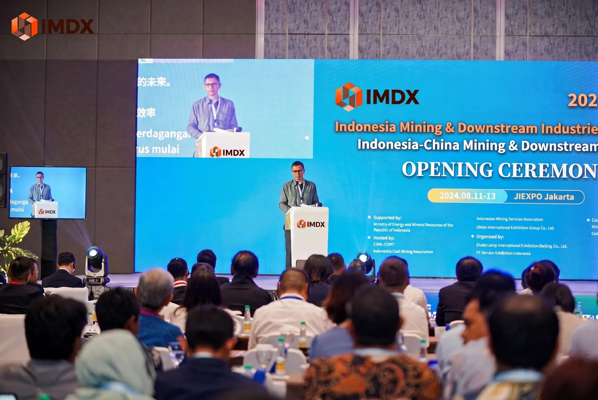
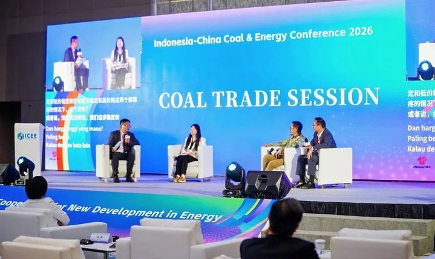

![]()
 01 / CONNECT
01 / CONNECT
Industry connections
Meet stakeholders across mining, equipment, services, processing and downstream value chains.
↗A major business gathering for mining extraction, mineral processing, advanced technology and downstream industrial solutions in Indonesia.
A dedicated platform connecting upstream mining, mineral processing, smart technology and high-value downstream opportunities.
Indonesia Mining & Downstream Industries Exhibition 2027 brings together industry players, technology providers and decision-makers to exchange ideas, explore partnerships and shape what's next for the sector.
Explore exhibition scope
01 / CONNECT
Meet stakeholders across mining, equipment, services, processing and downstream value chains.
↗ 02 / DISCOVER
02 / DISCOVER
Explore emerging solutions in automation, processing equipment and responsible operations.
↗
03 / COLLABORATETake part in conference discussions and conversations that move the industry forward.
↗From extraction at the source to applications that create new value. Explore the sectors represented at the exhibition.
Explore the themes behind the upcoming exhibition. These editorial previews reflect the event invitation; official news will be supplied by the organizing committee.
Discover the equipment, technologies and industrial solutions represented across the exhibition's eight major focus areas.
Explore the exhibit scope ↗Mineral processing, metallurgy, and downstream end-use applications.
Read overview ↗Equipment, digital automation, services and environmental technologies.
Explore exhibiting ↗Showcase your capabilities, introduce your solutions and begin meaningful conversations with the industry.
 YOUR SPACE.
YOUR SPACE.Connect with industry peers through expert dialogues and business-focused conversations. Detailed sessions will be announced.

Policy perspectives, sustainable solutions and supply-demand matchmaking.

Industry trends, policy dialogue and bilateral business exchange.

Connect with mine owners, contractors, manufacturers and industry organizations.
Create an event account and choose your visitor or conference experience.
Review your booking and request a manual bank-transfer invoice in your account.
Receive your personal pass after registration approval. Admission is checked only in the secured CMS.
Jakarta International Expo (JIExpo) Kemayoran is located strategically in the heart of Jakarta, offering exceptional accessibility that makes it Indonesia’s premier destination for massive international trade shows, concerts, and conventions.
The landmark brings together thousands of industry professionals, exhibitors and buyers to accelerate networking and business opportunities. The venue offers familiarity amongst the food and beverage industry, with business facilitation, easy transportation access and spacious parking area.
Jakarta International Expo (JIExpo) Kemayoran is one of the leading venues in Jakarta, and provide the best solution for Meetings Convention Conference Exhibition (MICE) in Indonesia.
JIExpo Kemayoran has an area up to 44 hectares, with 100,000 sqm exhibition area, consist of 50,000 sqm of indoor and more than 50,000 sqm of open space or outdoor area. Over the years, JIEXPO has hosted various exhibitions and events across multi sectors.

Indonesia Mining & Downstream Industries Exhibition 2027 is scheduled for 26–28 May 2027 at JIEXPO, Jakarta, Indonesia.
Yes. Sign in, choose preferred available units on the published floorplan and enter the area you need in m². Your selection is a request only — the organizer confirms the final booth, area and quotation.
Create a verified account and select a published conference. Paid bookings use a manually issued invoice and organizer-confirmed bank transfer.
Paid conference and booth bookings use organizer-issued invoices and manual bank transfers. Finance confirms payments in CMS; no automatic checkout is available.
Selected institutions and organizers mentioned in the preliminary event invitation. Names, logos and involvement are subject to organizer confirmation.
Build connections. Explore opportunities. Shape the next chapter of the mining value chain.
IMDX / 2027